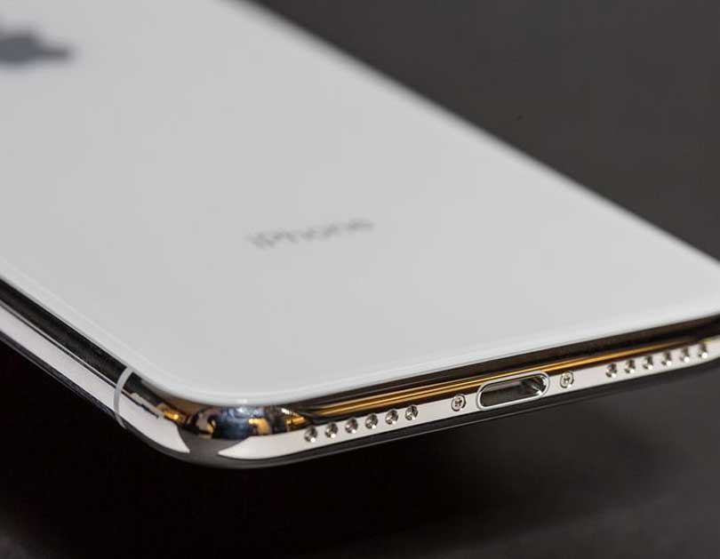
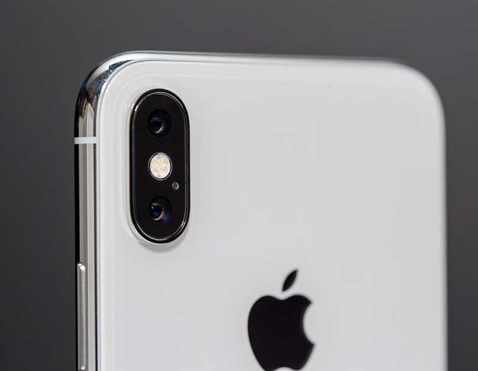
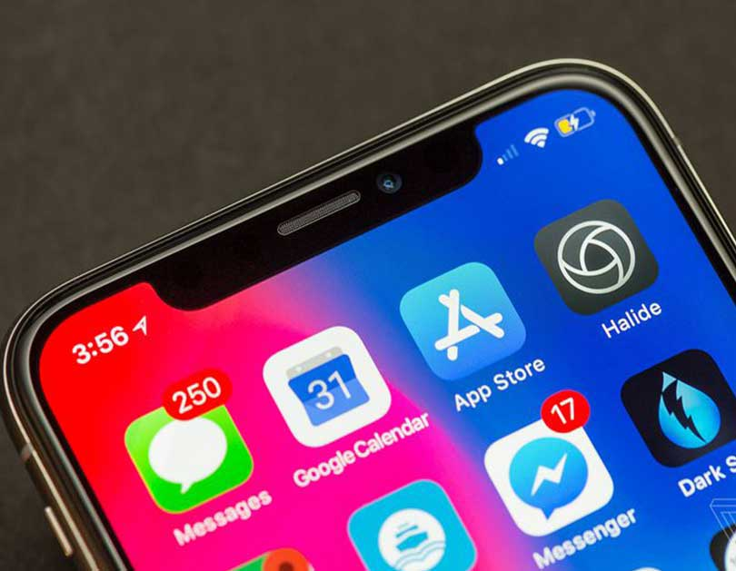

| iPhonex Specs | |
|---|---|
| CPU | Apple A11 Fusion |
| GPU | Apple M11 |
| RAM | 3 GB |
| ROM | 128 GB |
| Battery | 3000mAh |
| Camera | Dual camera 12MP |
| Front Camera | 8 MP |
After months of hype, endless speculation, and a wave of last-minute rumors about production delays, the iPhone X is finally here. Apple says it’s a complete reimagining of what the iPhone should be, 10 years after the original revolutionized the world. That means some fundamental aspects of the iPhone are totally different here — most notably, the home button and fingerprint sensor are gone, replaced by a new system of navigation gestures and Apple’s new Face ID unlocking system. These are major changes. New iPhones and major changes usually command a ton of hype, and Apple’s pushing the hype level around the iPhone X even higher than usual, especially given the new thousand-dollar starting price point. For the last few years, we've said some variation of "it's a new iPhone" when we’ve reviewed these devices. But Apple wants this to be the beginning of the next 10 years. It wants the iPhone X to be more than just the new iPhone. It wants it to be the beginning of a new generation of iPhones. That's a lot to live up to. I got a lot of questions about the iPhone X as I wrote this review, and I did my best to answer as many of them as I could. Apple’s asking users to change a decade’s worth of habits, which is a big change. And with big changes come big risks.. 
At a glance, the iPhone X looks so good one of our video editors kept saying it looked fake. It’s polished and tight and clean — my new favorite Apple thing is that the company managed to move all the regulatory text to software, leaving just the word “iPhone” on the back. The screen is bright and colorful and appears to be laminated tighter than previous iPhones, so it looks like the pixels are right on top. Honestly, it does kind of look like a 3D model instead of an actual working phone.
THE IPHONE X BASICALLY LOOKS LIKE A LIVING 3D RENDER
But it is a real phone, and it’s clear it was just as challenging to actually build as all the rumors suggested. It’s gorgeous, but it’s not flawless. There’s a tiny sharp ridge between the glass back and the chrome frame that I feel every time I pick up the phone. That chrome frame seems destined to get scratched and dinged, as every chrome Apple product tends to do. The camera bump on the back is huge; a larger housing than the iPhone 8 Plus fitted onto a much smaller body and designed to draw attention to itself, especially on my silver review unit. There are definitely going to be people who think it’s ugly. But it’s growing on me.

There’s no headphone jack, which continues to suck on every phone that omits it, but that’s the price you pay for a bezel-less screen with a notch at the top. Around the sides, you’ll find the volume buttons, the mute switch, and the sleep / wake button. The removal of the home button means there are a few new button combinations to remember: pressing the top volume button and the sleep / wake button together takes a screenshot. Holding the sleep button opens Siri. And you turn the phone off by holding either of the volume buttons and the sleep button for several seconds.

The iPhone X is clearly the best iPhone ever made. It’s thin, it’s powerful, it has ambitious ideas about what cameras on phones can be used for, and it pushes the design language of phones into a strange new place. It is a huge step forward in terms of phone hardware, and it has the notch to show for it. If you’re one of the many people who preordered this thing, I think you’ll be happy, although you’ll be going on the journey of figuring out when and how Face ID works best with everyone else.
IT’S A NEW IPHONE
But if you didn’t preorder, I suspect you might not feel that left out for a while. The iPhone X might be a huge step forward in terms of hardware, but iOS 11 runs the same on lots of other iPhones, and you won’t be missing out on anything except Animoji. Face ID works extremely well, although you should expect to have to move the phone closer to your face from time to time. And until your favorite apps are updated, you won’t be able to make use of that entire beautiful display.
All that adds up to the thing you already know: the iPhone X is a very expensive iPhone. For a lot of people, it’ll be worth it. For a lot of people, it’ll seem ridiculous. But fundamentally, it’s a new iPhone, and that means you probably already know if you want to spend a thousand dollars on one. If you’re a huge iPhone fan and you have the money, you’ll love it. It’s a really nice phone. But if you have any doubts at all, stick with an iPhone 8 or 8 Plus. You’ll get most of the same features, and you’ll wait out app developers figuring out how to use this new screen. Eventually every iPhone will look like the iPhone X, after all. The rest of us will just be using Animoji in the meantime.
Link to the original text THE VERGE
TRENDS: